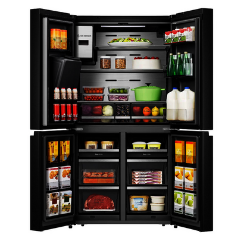

Overview
Purpose
To maintain a sustainable growth at all levels of our business. To operate a sustainable business. To expand our reach globally. To provide our customers with state of the art products which are ISO 14,000 series compliant. To help our customers reduce economic waste.
Audience
Our range of products are needed in homes, schools, churches, hotels, corporations, hotels etc for smooth and effective operations.
Branding
Website Logo
Style Guide
Color Palette
Palette URL: https://coolors.co/palette/f72585-7209b7-3a0ca3-4361ee-4cc9f0| Primary | Secondary | Accent 1 | Accent 2 | |
|---|---|---|---|---|
| #7209b7 | #3a0ca3 | #f72585 | #4361ee | #4cc9f0 |
Typography
Heading Font: Joti One
Paragraph Font: Ubuntu
Normal paragraph example
With many years of experience in the electronics market, Amosinecap Global Enterprises Nig is poised and dedicated to render solutions to the electronics needs of our customers ranging from the latest innovations innovation in televisions, sound systems, refrigeration systems, power generation sets, etc. You welcome to do business with us.
Colored paragraph example
Our home electronics demands differ as a result of our different incomes and budgets. Amosinecap is available 24/7 to give you the electronics solutions you need no matter the income and budget at an increased satisfaction.
Navigation
Site Map
Content
Home page
Images for the Home page

Amosinecap Global Ents Nig is dedicated to serve you with its vast electronics brands and product which will serve your demands. As the world is aimed and geared towards sustainability in all aspects ranging from the practices, the products we use and in all we do, we are poised to serve you with our environmental friendly products which meet global standard.
While considering all these options and present day demand of comfort or are you condering and option for your demands in electronics, Amosinecap Global Ents Nig is the right place for all these demands to be met.
About Us

Amosinecap Global Ents Nig was registered was incorporated in Nigeria in the year 2018 with experiences in the supply, maintenance of electronics appliances for the satisfacion of our customers. Our customers are at the forefront of our services and products which is why we render state - of - the - art products which meet their demands with regards to sustainability, eco-friendliness, and maximum comfort. Our services bears in mind the ISO 14000 series which takes into account all the needs of environmental protection and low waste as well as taking into consideration the future.
Our track records of products of impeccable standard speaks volume for us as we have delivered to households, corporate organization and other entities which help the meet meet their demands and needs. We understand the dynamics and cost of energy within our ecosystem and at such, we have notable lower energy consuming appliances which gives high output with lower energy consumption.
Our clientele spans the length and breadth of the nation. This is on the account of trust and confidence we enjoy from our customers whom we have served. Anywhere you are, we supply to your door step in line with the standard you desired which is a boost on the good will we enjoy today. We equally use our products with our customers. In otherwords, we render after sales support services to our customers. You are not alone with us.
Our Products
We are distributors to the best electronics brands namely: Haier Thermocool brands, LG, Hisense, Polystar, Skyrun, Bruhm, Panasonic, Samsung etc.
Our brands of products are of impeccable and comes with associated warranties should there be a factory defect.
Our Fridges
Our turbo inverter fridge, up to 50% Energy Saving, Lid-installed Fan, Electronic Control, Super Fast Freezing, 120 Hours frozen After Power outage, LED Lighting, Door Lock, External Handle.
Washing Machine

The Hisense frontload washing machine adjusts wash time based on the weight of our laundry. Redistributes your laundry inside the drum to ensure smooth and quiet spin operation. All Hisense washing are built to the highest standards, making any choice you make a smart choice. You can get the best price of all from us.
Our Generators
Our generator set is well designed and high performnace appliance that guarantees steady power supply to your home or office. It has a low noise operation which makes it suitable to use any time of the day. This also ensures you do not need to site it far from your house to be able to enjoy a good night rest. It has a high power output make possible to power your refridgerators, televisions, light bulbs, air conditioners, electric pressing iron, pumping machine etc. It also have remote features which reduces the stress of drawing or using the key to start. With the remote, you can on your generator while 50 meters away.
Freezers
More often times than none, a freezer is one of the electrical appliances that must be found in every home. There are general home appliances and assessories, which generally contributes to you having a better stay in your home both for you and your family. This appliances ensure that you get work done better and faster. Freezers are one of such home appliances and we recommend that you have them in your home. A freezer is appliance which helps to preserve food as well as drinks by keeping them really cold and frozen till when you eventually need to cook or eat them. Preservation by freezing works by preventing the growth of mould or bacteria in your food if kept refrigerated. Food can stay up to days, weeks and even moths without losing their original quality or nutrient.
Wireframes
Create three wireframes for your site. One for each page and list them here
Home
An Overview of Amosinecap Global Ents Nig.
About Us
What we do and who we are

Our Products
Our range of products of impeccable standard for our different customers.